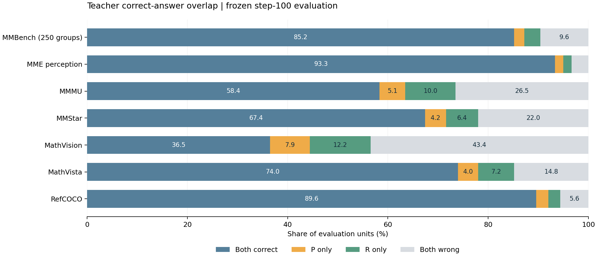

远端提交 23eed8bdadc9498b5b9e3cb3640cb03863dc6e32。P 为感知教师，R 为推理教师，均为 step 100。全部 3423 行 ID、逐行 hash、协议已核对，并从原始回答重新评分，与保存结果完全一致。

| 评测集 | 计分单位 | 共同答对 | 仅 P 对 | 仅 R 对 | 共同答错 | P / R / 理想选择 (%) | R−P，95% CI (pp) |
|---|---|---|---|---|---|---|---|
| MMBench_DEV_EN_V11 | 250 | 213 | 5 | 8 | 24 | 87.20 / 88.40 / 90.40 | 1.20 [-1.60, 4.00] |
| MME_perception | 240 | 224 | 4 | 4 | 8 | 95.00 / 95.00 / 96.67 | 0.00 [-2.36, 2.40] |
| MMMU_DEV_VAL | 449 | 262 | 23 | 45 | 119 | 63.47 / 68.37 / 73.50 | 4.90 [1.34, 8.46] |
| MMStar | 500 | 337 | 21 | 32 | 110 | 71.60 / 73.80 / 78.00 | 2.20 [-0.60, 5.00] |
| MathVision_MINI | 304 | 111 | 24 | 37 | 132 | 44.41 / 48.68 / 56.58 | 4.28 [-0.66, 9.21] |
| MathVista_MINI | 500 | 370 | 20 | 36 | 74 | 78.00 / 81.20 / 85.20 | 3.20 [0.40, 6.20] |
| RefCOCO_heldout | 500 | 448 | 12 | 12 | 28 | 92.00 / 92.00 / 94.40 | 0.00 [-1.97, 1.87] |
MMBench 的 930 个选项版本先合并为 250 个问题组，要求同一教师整组全对；其余基准保留原计分口径。理想选择使用真实标签，仅表示当前教师最终答案的潜在覆盖。
| 维度（基准等权） | P (%) | R (%) | 理想选择 (%) | 相对 R 增量 (pp) |
|---|---|---|---|---|
| perception | 93.50 | 93.50 | 95.53 | 2.03 |
| reasoning | 61.96 | 66.09 | 71.76 | 5.67 |
| general | 79.40 | 81.10 | 84.20 | 3.10 |
以下为计数，general 中 MMBench 按循环组计分；不是各基准等权均分。
| 维度 | 教师 | 计分单位 | 原本错、现在对 | 原本对、现在错 | 净增正确 |
|---|---|---|---|---|---|
| perception | P | 740 | 21 | 15 | 6 |
| perception | R | 740 | 8 | 2 | 6 |
| reasoning | P | 1253 | 134 | 47 | 87 |
| reasoning | R | 1253 | 165 | 27 | 138 |
| general | P | 750 | 57 | 32 | 25 |
| general | R | 750 | 60 | 21 | 39 |
1253 道推理题中，P 独有答对 67 道（对方失败类型：{'wrong_answer': 38, 'length': 29}）；R 独有答对 118 道（对方失败类型：{'length': 79, 'wrong_answer': 39}）。R 净多答对 51 道，截断相关胜负的净差为 50 道。这是当前预算下的错误类型统计，不是放宽预算后性能的因果预测。
完整文件：结构化结果及输入哈希 · 基准汇总 · 子类统计 · 全部分歧样本 · 相对 baseline 变化 · 复现脚本